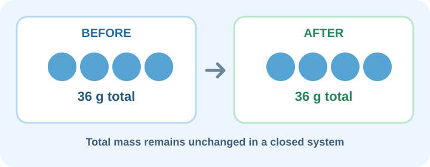

CHEMISTRY · QUICK VISUAL REVISION
Law of Conservation of Mass
Statement, scientist, simple experiments and solved numerical examples.
Understand the law

Total mass of reactants = Total mass of products
Proposed by: Antoine Lavoisier (1789).
In an ordinary chemical reaction, matter is neither created nor destroyed; atoms are rearranged.
Worked examples
1. Formation of water
2H₂ + O₂ → 2H₂O
4 g hydrogen + 32 g oxygen = 36 g water.
2H₂ + O₂ → 2H₂O
4 g hydrogen + 32 g oxygen = 36 g water.
2. Decomposition of calcium carbonate
CaCO₃ → CaO + CO₂
10 g CaCO₃ → 5.6 g CaO + 4.4 g CO₂
Products = 5.6 + 4.4 = 10 g.
CaCO₃ → CaO + CO₂
10 g CaCO₃ → 5.6 g CaO + 4.4 g CO₂
Products = 5.6 + 4.4 = 10 g.
3. Find the missing product mass
Total reactants = 25 g; one product = 18 g.
Other product = 25 − 18 = 7 g.
Total reactants = 25 g; one product = 18 g.
Other product = 25 − 18 = 7 g.
4. Magnesium burning
2Mg + O₂ → 2MgO
Magnesium combines with oxygen from air, so the solid product can weigh more than the original magnesium. The oxygen's mass must also be counted.
2Mg + O₂ → 2MgO
Magnesium combines with oxygen from air, so the solid product can weigh more than the original magnesium. The oxygen's mass must also be counted.
Closed vs open system
Closed system: Matter cannot enter or leave. Total mass measured before and after remains the same.
Open system: Gas may escape or enter. The measured mass of the container and its contents can appear to change, but include all matter involved and mass is conserved.
Exam quick recall
- Scientist: Antoine Lavoisier.
- Year: 1789.
- Mass is conserved in ordinary chemical reactions.
- Balanced equations have equal numbers of each type of atom on both sides.
- Always include gases when comparing total mass.
SkillUp Chemistry · Law of Conservation of Mass